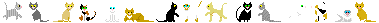

Home
Projects
About
Extras

|
Expand all | Close all
Jun 2024 - Present
Supervisor: Prof. SP Arun (IISc, Bangalore)
(1) Understanding agency encoding in the brain and
(2) analysis of neural recordings in sleeping bonnet macaques.
More?
- Designed "game-playing" tasks to study brain encoding of agency under reward-based conditions. Contributed equally to task design, macaque training, and data collection alongside Sudhanshu Bharadwaj.
- Analyzed neural recordings during sleep and explored REM/NREM phases using LFP/MUA data. Working on publishing this project, as a part of a larger study on naturalistic behaviours in macaques.
Jun 2023 - Apr 2024
Supervisor: Prof. SP Arun (IISc, Bangalore)
Neural Correlates of Sleep and Game-Playing in Bonnet Macaques
More?
- Chapter 1: Patterns of neural activity during sleep (MUA/LFP signals), comparing wakefulness and sleep phases. MS Thesis
- Chapter 2: Training macaques to perform maze-like tasks in MonkeyLogic. Joint work with Sudhanshu Bharadwaj. MS Thesis
Aug 2022 - Apr 2023
Supervisor: Dr. Collins Assisi (IISER Pune)
Route to chaotic dynamics in “Sudoku” Neuronal Networks
More?
- Modeled chaotic dynamics in neuronal networks using excitation-inhibition balance, with Sudoku-inspired connectivity.
- Explored transitions between limit cycles using Mirollo-Strogatz coupled oscillators and synaptic plasticity.
Links:
Nov '22 Poster |
Jan '23 Poster |
Endsemester Report |
GitHub |
JupyterBook
Neuromatch Academy - Computational Neuroscience
July 2022
Student @ NMA Computational Neuroscience 2022
Modulation of cortical visual interneuron activity by stimulus novelty
More?
- Attended 3-week program focused on computational neuroscience (Bayesian inference, Hidden Markov models, etc.).
- Analyzed the Allen Institute Visual Behavior 2P dataset to study cortical interneuron response to novelty.
Links:
Slides |
Colab Notebook
Undergraduate Research Project @ IIT Bombay
Jan 2022 - Apr 2022
Supervisors: Prof. Rohit Manchanda, Nitin Anisetty (IIT Bombay)
More?
- Gained proficiency in NEURON software for cellular neurophysiology modeling.
- Studied variable time-step integration using Cvode in NEURON.
iGEM 2021 - Team IISER-Pune-India
Feb 2021 - Nov 2021
Supervisor: Prof. Thomas Pucadyil (IISER Pune)
Recycling CO2 for Bio-manufacturing Using a Co-culture of Cyanobacteria and E. coli
More?
- Won gold medal, nominated for Best Manufacturing Project and Best Education.
- Worked on dry lab modeling using Flux Balance Analysis (MATLAB).
- Built project website!
Links:
iGEM Website |
GitHub
Automatic CAPTCHA Chrome Extension
January 2022
SAM-autocaptcha
Google Chrome extension that automatically fills in the "CAPTCHA" form element for IISER Pune's SAM portal (Academic ERP) login form.
More?
- Updated Aug' 2024 to v2.0: Updated to use Tesseract.js to perform the OCR locally on the browser, instead of using a free API.
Links:
GitHub
|